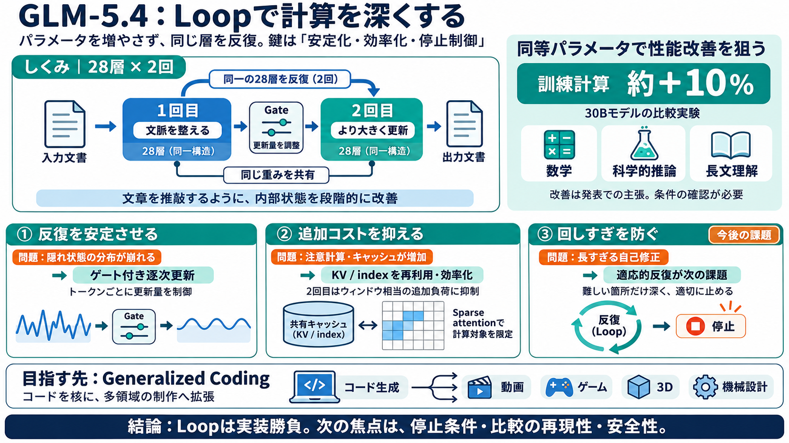

Looped Transformer：发展历程、数学直觉、核心问题与研究版图 - 知乎
早期的循环模型可能为每轮保留独立 KV cache，使内存随循环深度增长。MELT 用共享 cache 和可学习更新，尝试把循环计算与缓存内存解耦。\ Shared Memory 发现，在其训练设置中，首轮写共享缓存、后轮读取并保留短局部窗…

重み共有（同じ層ブロックを反復）で 計算深度 を増やす。
隠れ状態が暴れると、以降の層が期待分布から外れる。
文脈を 保守的 に整える。
トークンごとに更新量を 制御。
段階的に より大きく 更新。
同等パラメータ（iso-parameter）
訓練計算：約 +10%
ループごとに注意計算＆キャッシュ増加。
2ループ目を スライディングウィンドウ 相当で抑制。
2ループ目の追加を抑える。
計算対象を限定。
ループ跨ぎで再計算を減らす。
応答時間・推論コスト・暴走リスク。
動的に反復回数を最適化。
コード生成（Code）
動画 / ゲーム / 3D / 機械設計
反復の痛点を設計で潰す。
設定依存・停止性・安全ハードニングは不明。
ゲート付き逐次更新
KV / index の効率化
停止性と適応的計算
早期的循环模型可能为每轮保留独立 KV cache，使内存随循环深度增长。MELT 用共享 cache 和可学习更新，尝试把循环计算与缓存内存解耦。\ Shared Memory 发现，在其训练设置中，首轮写共享缓存、后轮读取并保留短局部窗…
9 2026年2月、GLM-5は既にz.aiの公式ウェブサイトで公開されており、紹介文では最新のフラッグシップ対話、プログラミング、エージェントモデルとされている。これまでの情報によれば、DeepSeek-V3/V3.2と同じ技術路線、す…
各パラメータは以下の通り。 {\displaystyle C_{0}=6}、すなわち、1つのトークンで訓練するにはパラメータごとに6 FLOPsの費用がかかる。自動微分において、フォワードが積和演算なので2 FLOPs、リバースが4 F…
# Z.ai for Startups ID: ns1DZenGkRsm Website: www.startup.z.ai Headquarters: Silicon Valley, United States LinkedIn: www…
Advertisement Advertisement Partial Data by Foursquare. Partial Data by Infogroup © 2026. All rights reserved. [...] …